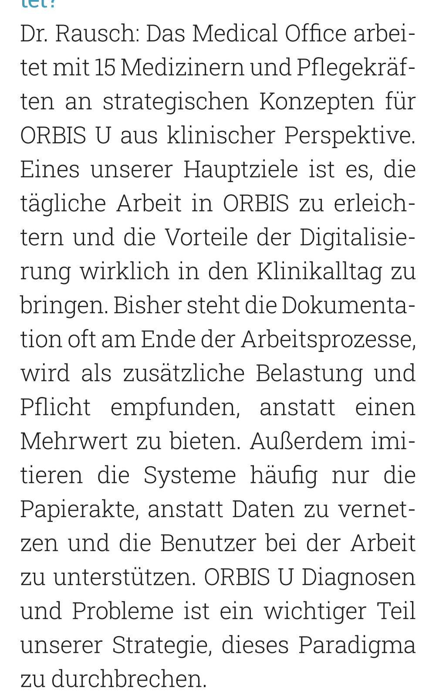
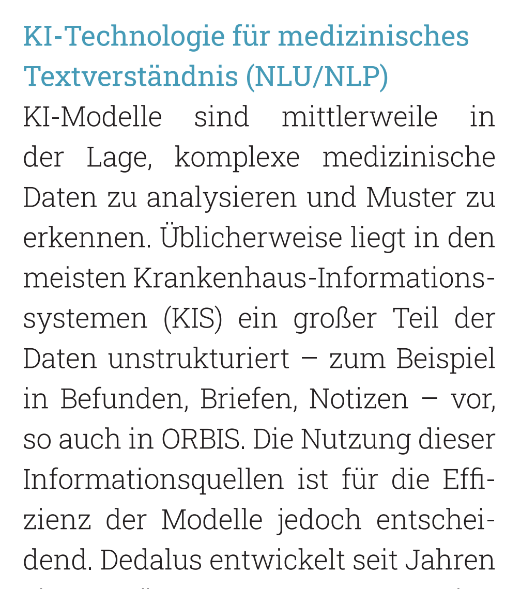

How new methods help us to make better use of existing data in Orbis and other systems
Who am I
Christian Römer M. Sc., Scientific Associate, Clinic for Radiology, UKM
RACOON
Research infrastructure of all German university radiology departments. Structured data from reports.
RAVEN, Informatics in Medicine Unlocked 2026
AI-based body composition analysis
What routine CT says about prognosis.
Lung cancer: J Cachexia Sarcopenia Muscle 2025 Melanoma: J Transl Med 2025 Oesophageal cancer: J Cachexia Sarcopenia Muscle 2026
ORCID 0000-0003-4386-9323
CT-Befund
Laborbericht
Pflegedoku
Tumorboard
Fieberkurve
Aufklärung
Abrechnung
Arztbrief19.08.2026
Neue Milchglasinfiltrate beidseits, V. a. immuntherapieassoziierte Pneumonitis.
Medikationsplan14.08.2026
Pembrolizumab: abgesetzt 14.08.2026
Hausarztbrief03.09.2026
Immuntherapie wegen Atemnot beendet.
Arztbrief06.10.2026
Bei Pneumonitis Grad 3 keine Reexposition.
Why was the immunotherapy stopped?
And in how many of our other patients, for the same reason?
Suspicion
Date
Symptom
Final reason
Invented example
Status quo
We store documents
Patient LC-009
Case 1, radiology
Case 2, day clinic
Case 3, inpatient
Outpatient
FebMarAprMayJunJulAugSepOct
Aufklärung
CT-Befund 10.02.
Tumorboard
Medikationsplan
Laborbericht
CT-Befund 14.08.
Absetzung 14.08.
Fieberkurve
Arztbrief 19.08.
Hausarztbr. 03.09.
Arztbrief 06.10.
Cases and forms suit administration. Questions follow the patient.
Invented example
More questions like this
Has this patient ever reacted to contrast medium?
TodayCAVE field, an old letter, or nowhere
Which of our lung cancer patients developed pneumonitis under immunotherapy?
Leberzirrhose Child-Pugh B. Bei Aufnahme MELD-Score 14. Vorstellung zur Transplantationsambulanz empfohlen.
“An automatic search for information in PDF-documents is not possible.”
MeDIC Münster, Study module, undated, accessed 11/2026
Invented example
Schematic search mask
The vendor says it too


Systems often only imitate the paper chart instead of connecting data.Chief Medical Officer, Dedalus DIREKT 2/2024
In most hospital systems a large part of the data is unstructured, also in ORBIS.Dedalus DIREKT 1/2024
„… erfordern jedoch weiterhin die Navigation durch verschiedene Module, Ansichten und Formulare“ … still require navigating modules, views and forms. Dedalus and Corti, press release, 10/2026
Is today’s data reliable?
34%
of severe sepsis cases had a sepsis code
10 German hospitals
6.6%
errors when values are copied by hand from records
93 papers, published 1978 to 2008
50%
of note text is copied from earlier notes
One US health system
Schwarzkopf et al., Infection 2023
Garza et al., Int J Med Inform 2025
Steinkamp et al., JAMA Netw Open 2022
Why not more forms?
Norway, after the move to a structured record
“free text remained the preferred method, with some exceptions”
Golburean et al., JMIR Form Res 2025
RACOON, the first template
67 items
More time than routine reading
Salg et al., npj Digital Medicine 2021
Let people write. Let machines structure.
New methods
One letter, four verbs
Arztbrief19.08.2026
Vorstellung mit zunehmender Atemnot, kein Fieber.Im CT vom 14.08.2026 neue Milchglasinfiltrate beidseits, V. a. immuntherapieassoziierte Pneumonitis. Kein Hinweis auf Lungenembolie. Pembrolizumab pausiert, Prednisolon begonnen.
Extract
Drug: Pembrolizumab Status: paused
Classify
Arztbrief, immune-related adverse event, lung
Summarise
Increasing dyspnoea, suspected pneumonitis on CT; pembrolizumab paused, prednisolone started.